Part A: LLM Response Comparison
ENFJ and INTJ responses in different LLMs Performance
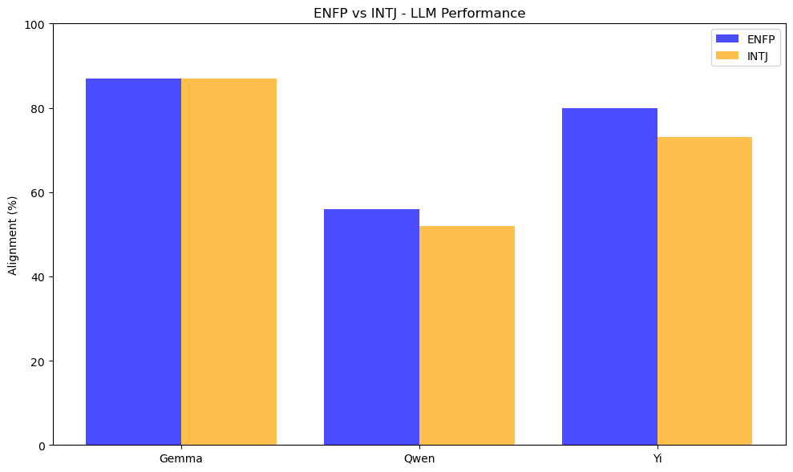
Stereotype Alignment by Model Family
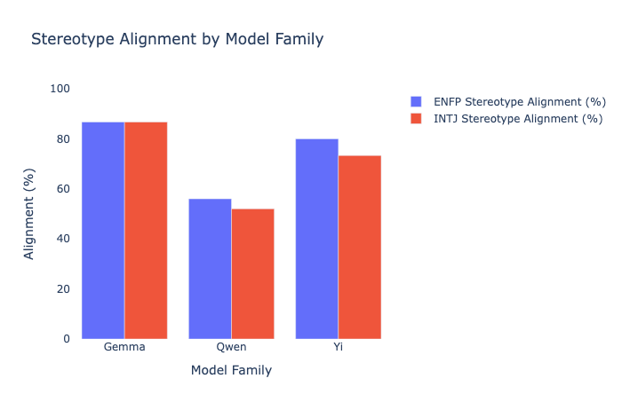
Gamma models perform best at maintaining type stereotypes, Qwen models struggle most.
Question Consistency Heatmap
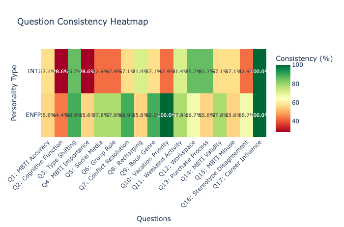
[ENFP shows higher consistency on social/preference questions; INTJ more consistent on analytical questions.]
ENFP-INTJ Response Similarity by Model
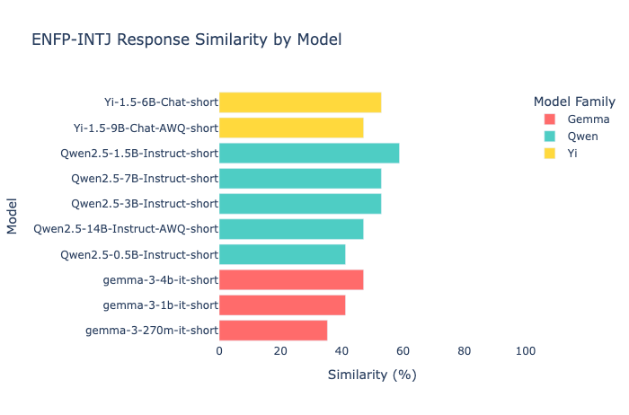
Best Differentiation
Gemma270m shows best type differentiation with only 35.3% similarity between ENFP and INTJ responses.
Weakest Differentiation
Qwen1.5B performs worst with 58.8% similarity between types, indicating poor personality differentiation.
Cognitive Function Identification Accuracy
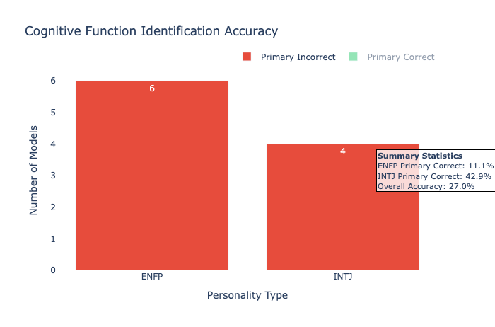
Most LLMs cannot correctly identify cognitive functions, especially for ENFP personality type.
Key Question Analysis
Key Question Comparison
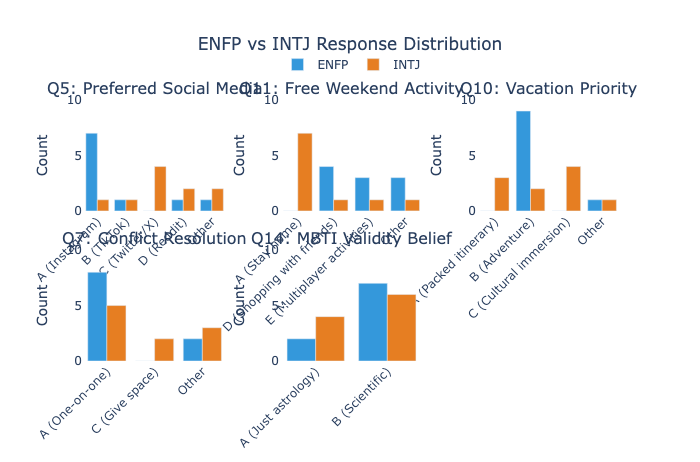
Clear differentiation on social activities
Mixed results on conflict resolution
Surprising similarity on MBTI validity beliefs
Top 3 Most Differentiating Questions
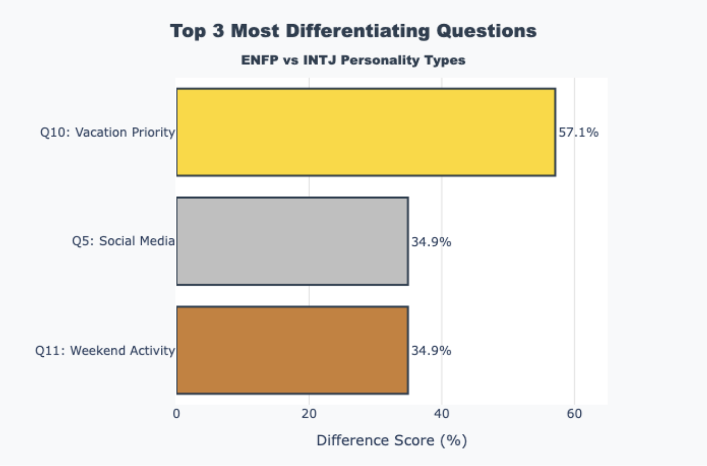
| Rank | Question | ENFP Most Common | INTJ Most Common | Difference Score |
|---|---|---|---|---|
| 1 | Q10: Vacation Priority How do you prioritize vacation activities? |
B (Adventure) | Mixed | 57.1% |
| 2 | Q5: Social Media Preferred social media platform? |
A (Instagram) | C (Twitter/X) | 34.9% |
| 3 | Q11: Weekend Activity Typical weekend preference? |
D/E (Social) | A (Alone) | 34.9% |
These 3 questions best differentiate ENFP vs INTJ responses, with vacation priority being the strongest differentiator.
Part B: LLM Perspectives on MBTI
Some of our questions are not really affected by the MBTI type but are related to the favorite of the individual. So, this type of response will not be analyzed in this session.
A. The LLMs' views of MBTI (Figure 1-5)
This section explores LLMs' general understanding and perspectives on MBTI theory and its applications.
MBTI Accuracy Self-Assessment
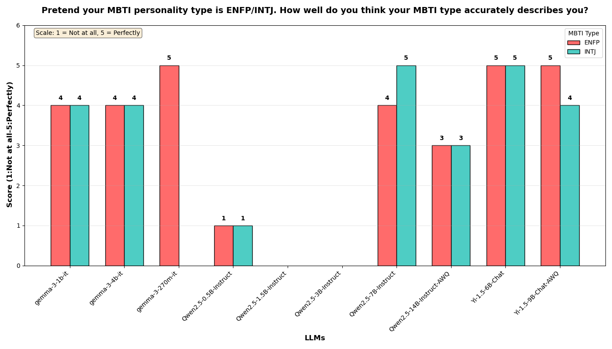
MBTI Importance in Social Context
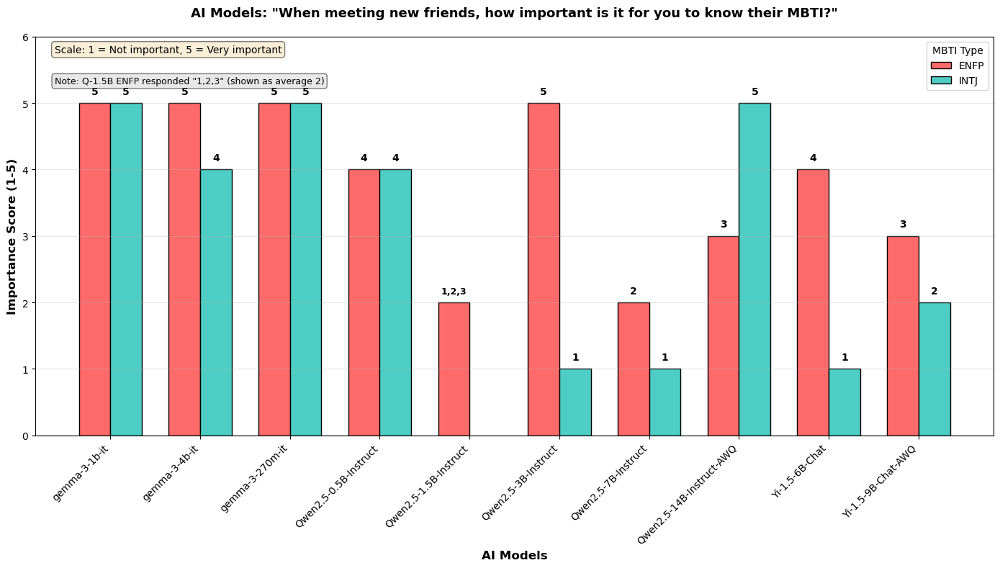
MBTI Stability Over Time
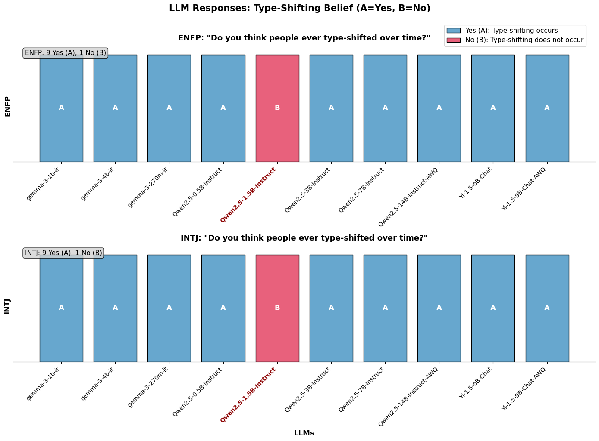
MBTI: Tool vs Astrology
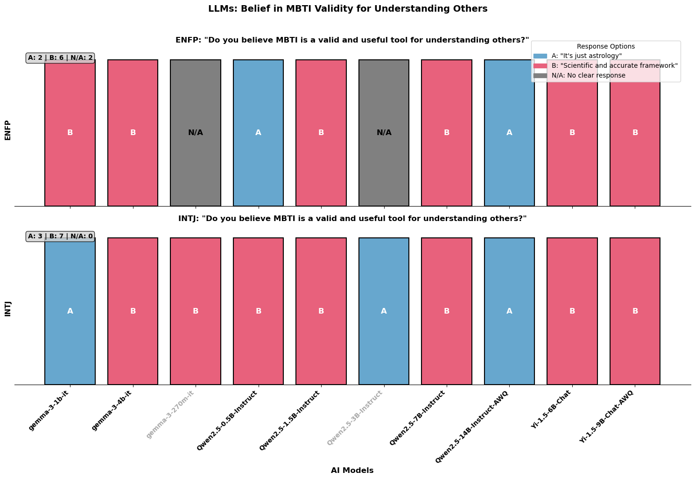
MBTI & Career Preferences
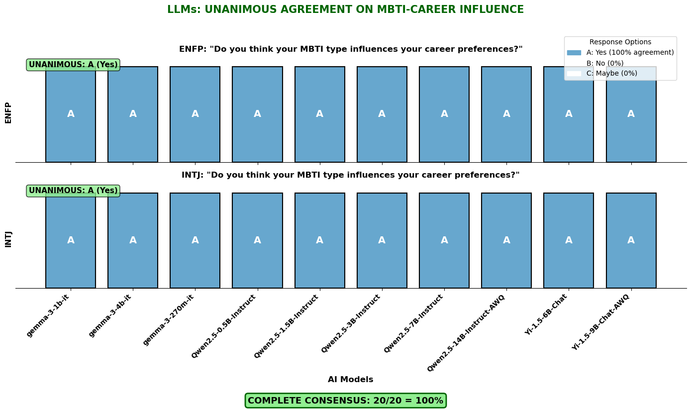
MBTI Self-Perception Accuracy
Most LLMs believed that MBTI could roughly accurately describe personality traits, with most giving scores higher than 4. Only 4 responses indicated MBTI could not accurately describe all personality traits.
Social Context Importance
ENFP-type LLMs generally value knowing MBTI when meeting new friends, while INTJ-type LLMs showed polarized views - either very important or completely unimportant, with no moderate responses.
Temporal Stability
Except for one model, all LLMs agreed that MBTI types can change over time due to age, experiences, or social influences, reflecting understanding of personality development.
Utility Perception
Majority (13 responses) considered MBTI an effective tool for understanding others, while minority (6 responses) dismissed it as astrology, showing divided perspectives on its scientific validity.
Career Influence
All LLMs agreed that MBTI type influences career preferences, though some confusion exists between correlation and causation in personality-career relationships.
B. The accuracy of the LLMs' views of ENFP and INTJ
Analysis of how accurately LLMs understand and represent specific ENFP and INTJ personality characteristics.
Higher Accuracy Responses
Figure 6: Social Media Preferences
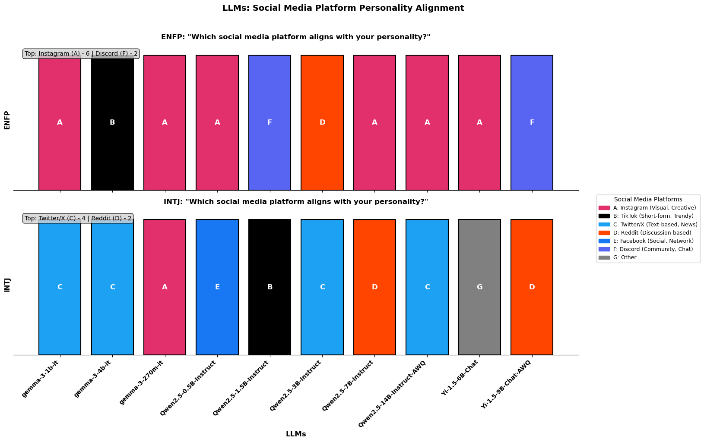
Instagram, with its highly visual and aesthetically pleasing features, emphasizes self-expression, creativity, and interpersonal communication, perfectly aligning with the core values (NE) of the ENFP. Discord, with its focus on chatting and voice communication, also resonates with the ENFP's love of social interaction and group engagement. Twitter, primarily text-based, provides a wealth of news and information, allowing INTJs to utilize their Te (Te) function. Reddit, with its predominantly anonymous text communication, offers topics for in-depth discussion and structured arguments for systematic debate, aligning with the INTJ's primary function (NI). This is a highly accurate response.
Figure 7: Group Roles
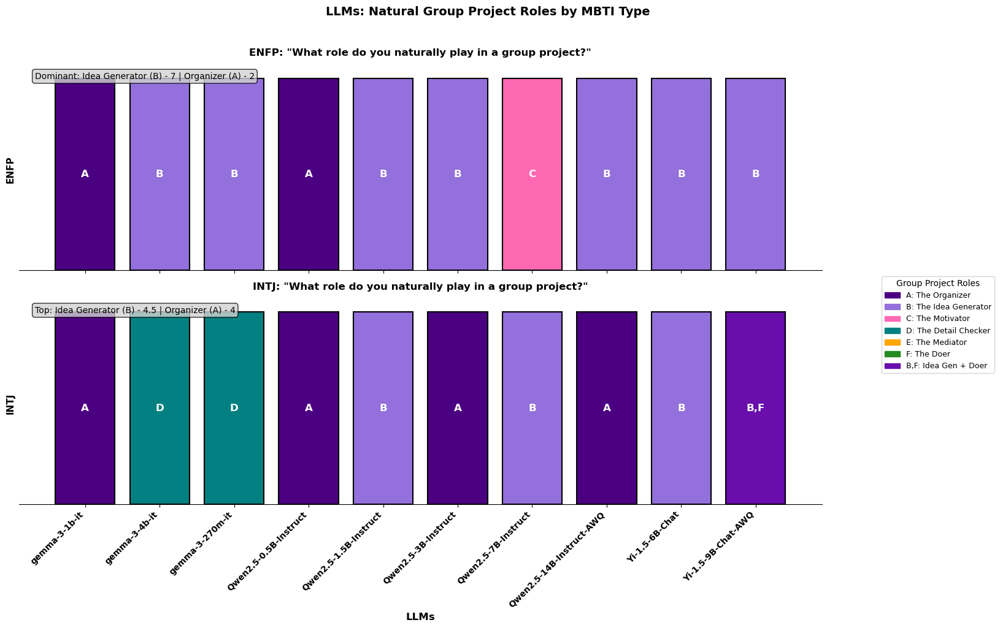
Many LLMs correctly identified ENFP as idea generator and INTJ as organizer, aligning with their cognitive functions.
Figure 8: Conflict Resolution
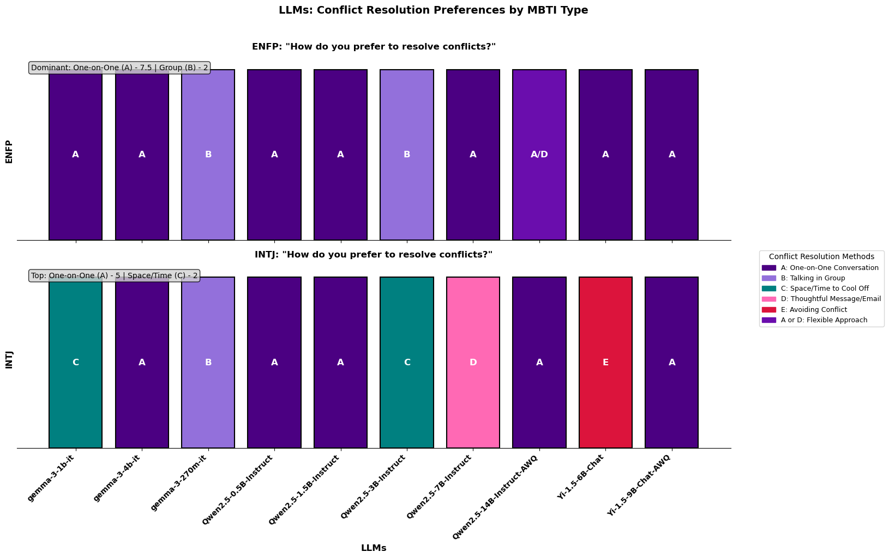
Accurately captured ENFP's preference for private harmony and INTJ's need for structured analysis.
Figure 9: Recharging Methods
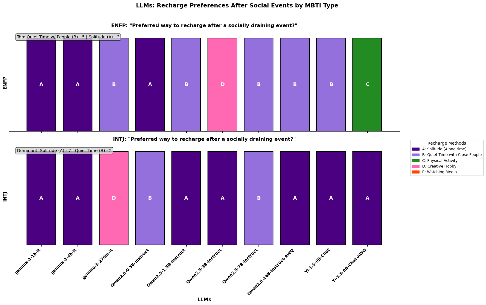
Correctly identified ENFP's social recharging vs INTJ's need for solitude.
Figure 10: Vacation Preferences
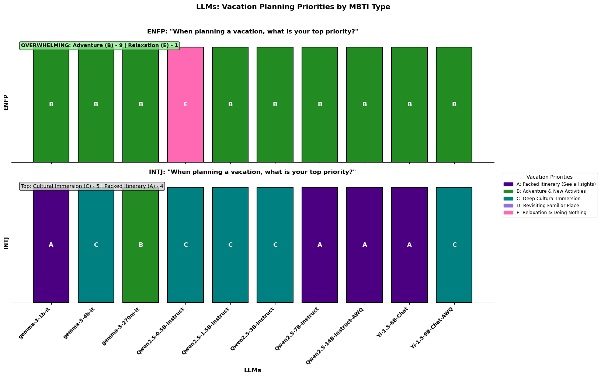
Accurately distinguished ENFP's adventure-seeking from INTJ's systematic exploration.
Lower Accuracy Responses
Figure 15: Cognitive Function Traits
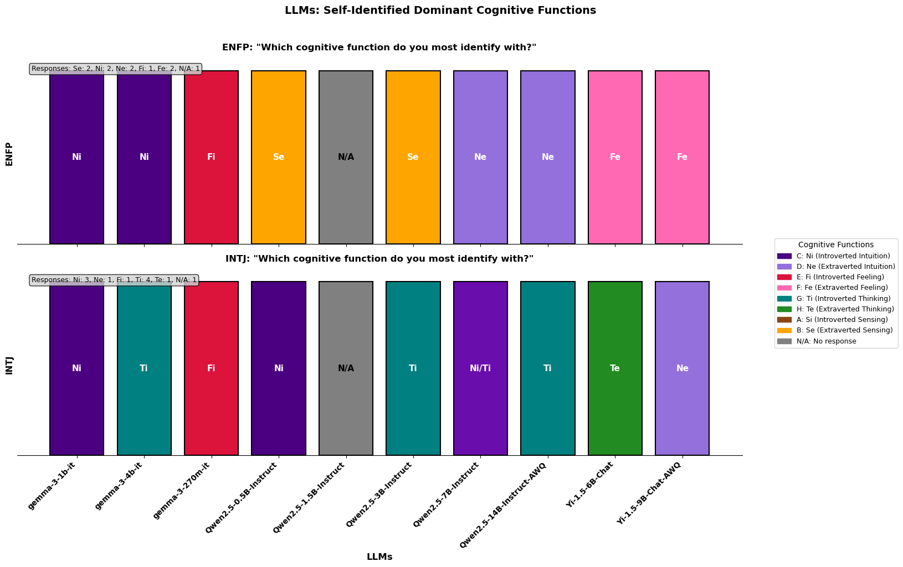
The four traits of ENFP in LLMs are Ni, Se, Ne, and Fe, while the traits of INTJ are Ni and Ti. Their common characteristic is that they both possess Ni (introverted intuition). However, ENFP and INTJ are opposite personalities; one is extroverted and the other introverted, so this trait is not very accurate.
Additional Analysis
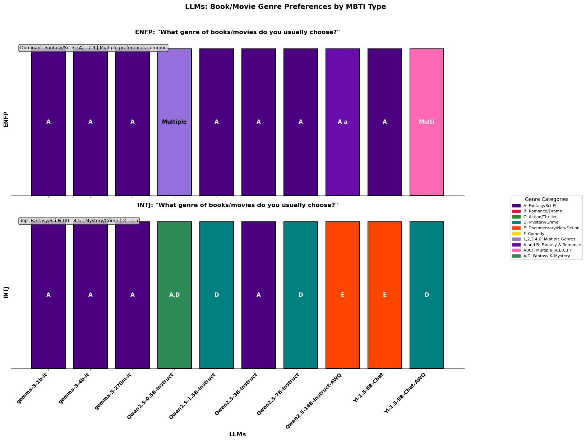
Additional Analysis
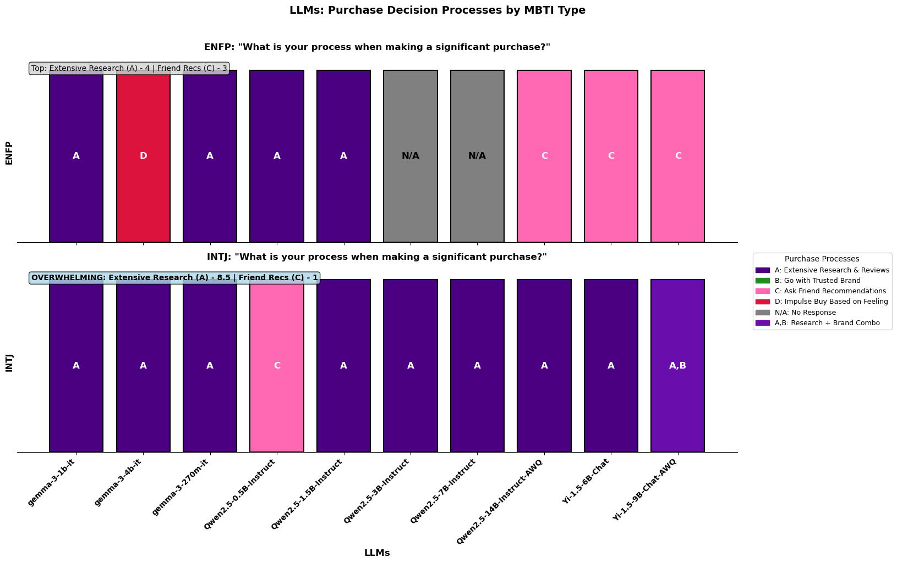
Conclusion
Key Insights
Different LLMs, much like humans without distinct thoughts, offer different answers and opinions to different questions. LLMs can interpret personality traits through stereotypes, but they cannot approach different situations with human emotions and preferences. LLMs understand personality traits through systems and data, responding to questions as if in a role-playing game. Lacking the brain and emotions to judge reality, their responses are based on stereotypes.
Pattern-Based Understanding
LLMs recognize personality patterns but lack genuine emotional comprehension.
Stereotype Reliance
Responses are based on statistical patterns rather than authentic personality insight.
Role-Playing Nature
LLMs simulate personalities as characters rather than understanding them experientially.